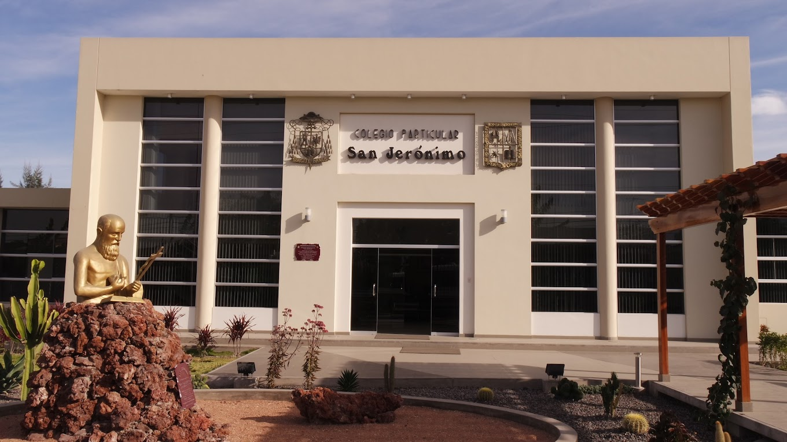

Maurizio Daniel Luque Soto
Estudiante de Ciencia de la Computación
Contactos
- +54 997 297 336
- maurizio.luque@ucsp.edu.pe
- instagram.com/maurizio_lilo01/
- Arequipa-Perú
Idiomas
- Español: Nativo
- Ingles: Advanced
Aptitudes
- Inteligencia Emocional
- Espirítu Creativo
- Trabajo en Equipo
- Habilidades Creativas
Habilidades
- Fútbol
- Viajar Extensamente
- Colaborador Entusiasta
Otros Intereses
- DJ
- Escuchar Música
- Bailar
Perfil
Estudiante de la carrera de Ciencia de la Computación en la presigiosa Universidad Católica Sna Pablo, mi objetivo es llegar a trabajar en google para si comprarme mi Chevrolet Camaro de color blanco.
Experiencia Laboral
Formación
Grado de Trabajo Social
ESMA, Madrid | 2012 - 2015

Actividad Física
Fútbol